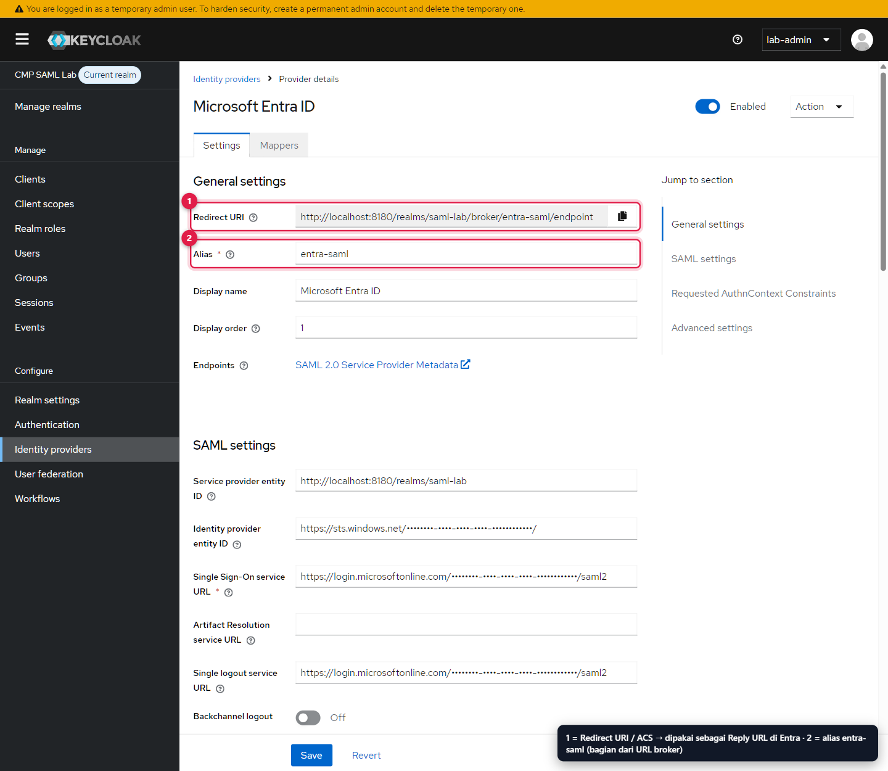
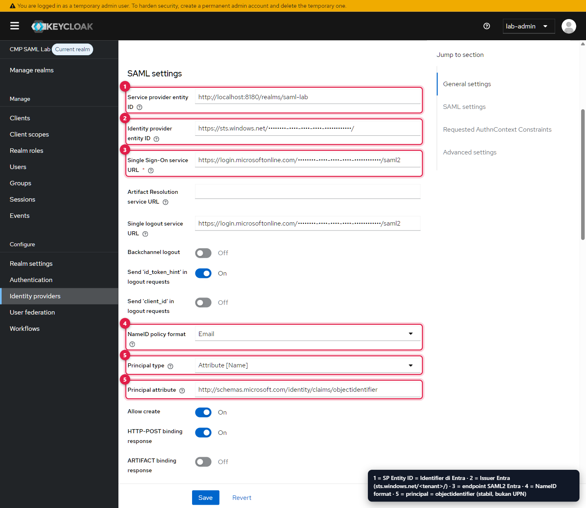
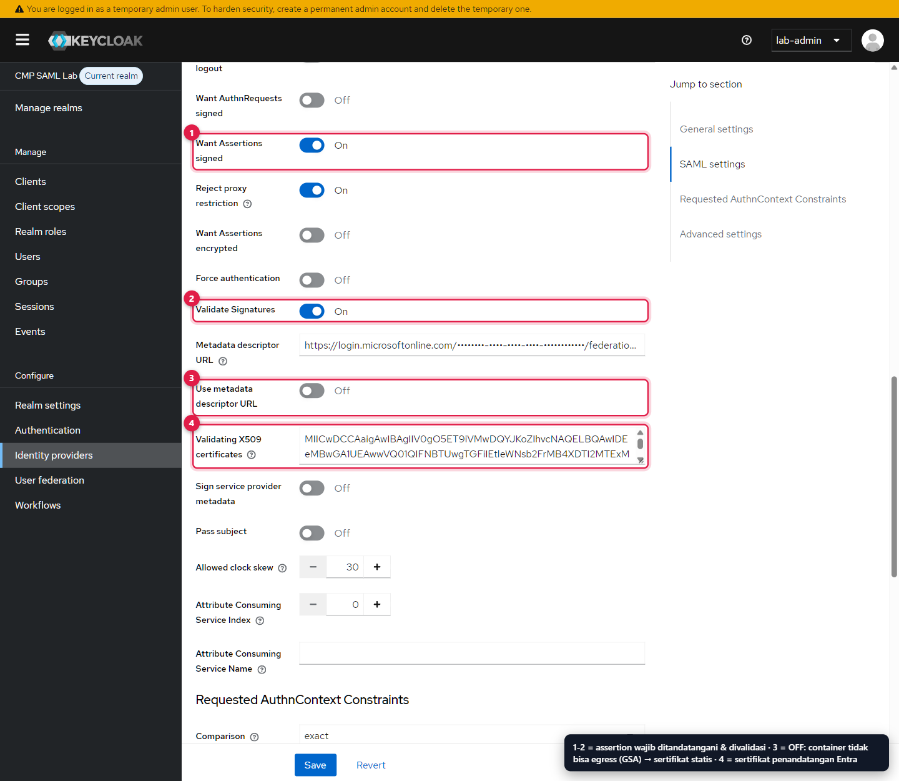
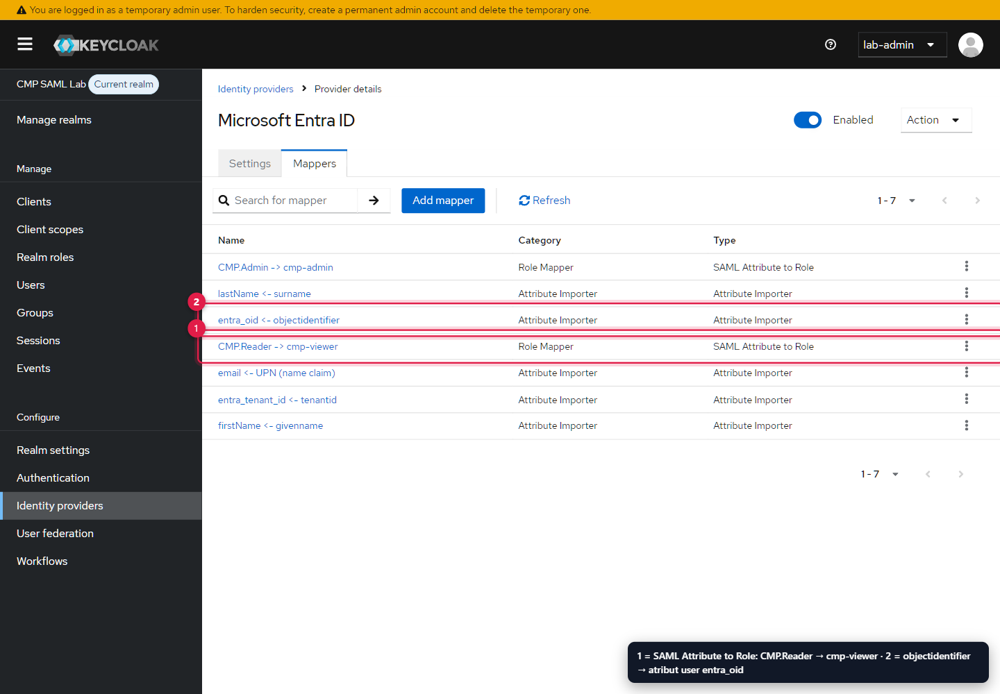
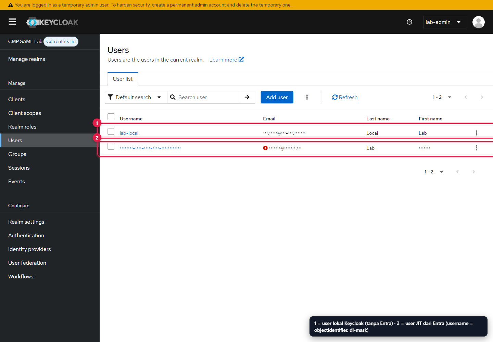
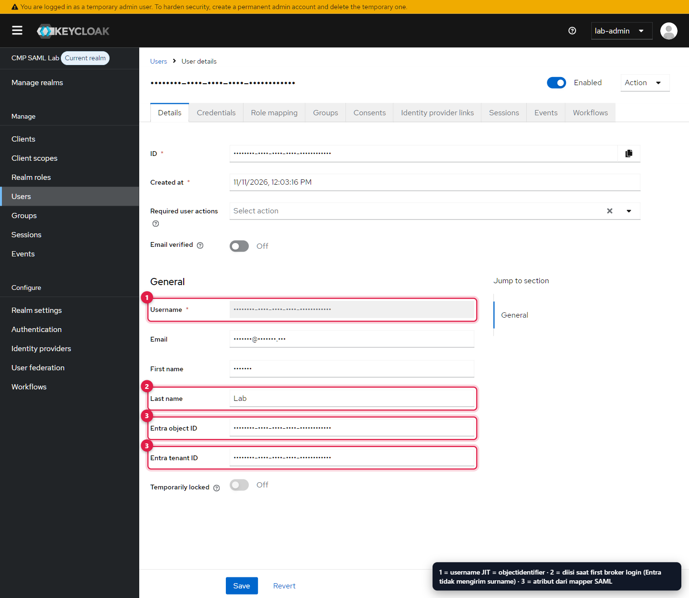
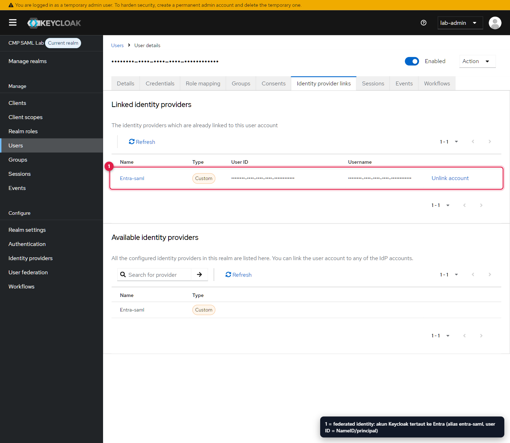
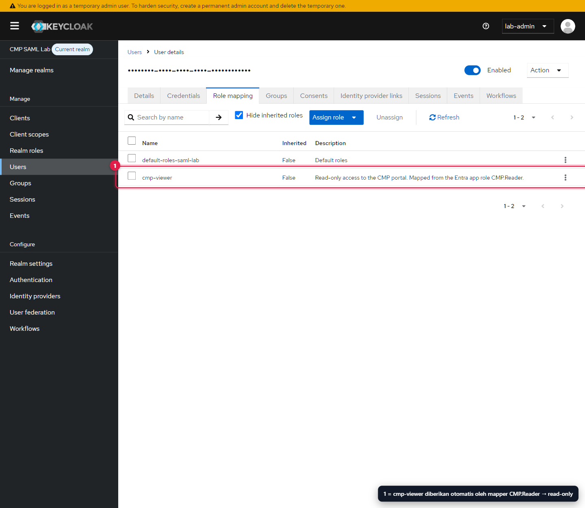

Percayai tanda tangan Entra.
Petakan identitas ke role.
Set-KeycloakEntraBroker.ps1 memakai Keycloak Admin REST API untuk membuat identity provider SAML entra-saml, tujuh mapper, atribut profil Entra, dan user lokal pembanding. Screenshot di bawah adalah hasilnya di admin console.
Fondasi dari realm import
File keycloak/realm-saml-lab.json diimpor saat container pertama kali start (--import-realm). Client secret ditulis sebagai ${CLAIMS_APP_CLIENT_SECRET} dan diisi Keycloak dari environment yang dibaca dari Docker secret, sehingga tidak ada secret di file realm.
Realm saml-lab | Nilai |
|---|---|
| SSL required | external (localhost boleh HTTP) |
| Brute force protection | On |
| Self-registration / reset password | Off / Off |
| Access token lifespan | 300 detik |
| SSO session idle / max | 30 menit / 10 jam |
| Realm roles | cmp-viewer, cmp-admin |
Client claims-app | Nilai |
|---|---|
| Tipe | Confidential OIDC, Standard flow saja |
| Direct access grants / implicit | Off / Off |
| PKCE | S256 wajib |
| Redirect URI | http://localhost:3180/callback (exact) |
| Klaim tambahan | roles, identity_provider, entra_oid, entra_tenant_id |
Impor metadata Entra tanpa egress container
TEMUAN LAPANGANVideo mengimpor App Federation Metadata URL langsung di Keycloak. Di laptop uji, Keycloak gagal dengan Network is unreachable: klien Global Secure Access membuat DNS di dalam container mengembalikan alamat sintetis 6.6.x.x yang tidak bisa dirutekan dari jaringan Docker.
Unduh metadata di host
Host Windows bisa menjangkau Entra; script menyimpan XML ke
.local/entra-federation-metadata.xml.Upload sebagai file
Invoke-RestMethod -Method Post -Uri "$base/identity-provider/import-config" -Headers $headers -Form @{ providerId = 'saml' file = Get-Item .local\entra-federation-metadata.xml }Respons berisi SSO URL, entity ID IdP, dan sertifikat signing Entra. Script menimpa nilai lab di atasnya, lalu membuat/memperbarui IdP.
Pakai sertifikat statis
useMetadataDescriptorUrl=false. Login tetap berjalan karena binding SAML dibawa oleh browser; Keycloak tidak perlu menghubungi Entra.
configure. Jika Keycloak punya egress ke login.microsoftonline.com, jalankan Set-KeycloakEntraBroker.ps1 -UseMetadataUrl agar Keycloak mengambil sertifikat baru sendiri.Konfigurasi IdP entra-saml
| Setting | Nilai | Mengapa |
|---|---|---|
| Service provider entity ID | http://localhost:8180/realms/saml-lab | Harus sama dengan Identifier di Entra. Menjadi Issuer AuthnRequest dan Audience yang diharapkan. |
| Principal type / attribute | ATTRIBUTE / …/claims/objectidentifier | Object ID immutable; NameID (UPN) bisa berubah ketika user di-rename. |
| NameID policy format | Email (urn:oasis:names:tc:SAML:1.1:nameid-format:emailAddress) | Format yang diminta di AuthnRequest; Entra mengisinya dengan UPN. |
| HTTP-POST binding response / AuthnRequest / logout | On / Off / Off | Respons via POST (assertion besar); AuthnRequest via Redirect, sesuai capture. |
| Want AuthnRequests signed | Off | Lab: Entra tidak mewajibkannya. Produksi: aktifkan (lihat hardening). |
| Want Assertions signed | On | Entra menandatangani Assertion, bukan Response. |
| Want Assertions encrypted | Off | Butuh sertifikat enkripsi SP yang diunggah ke Entra; opsional untuk lab. |
| Validate signatures | On + sertifikat Entra | Satu-satunya jangkar kepercayaan terhadap Entra. |
| Allowed clock skew | 30 detik | Toleransi jam host/WSL. |
| Sync mode | FORCE | Atribut dan role dari Entra diperbarui pada setiap login, termasuk pencabutan role Keycloak bila role Entra berubah. |
| Trust email | On | Email dari Entra dianggap terverifikasi; tidak ada email verifikasi ke user. |
| First login flow | first broker login | Review profile → buat user / link akun yang sudah ada. |


- Redirect URI: salin ke Reply URL Entra.
- Alias
entra-saml: bagian dari Redirect URI dan nilaikc_idp_hint. Mengganti alias berarti mengganti Reply URL.


- Service provider entity ID: salin ke Identifier Entra.
- Identity provider entity ID:
https://sts.windows.net/<tenant>/, harus sama denganIssuerassertion. - Single Sign-On service URL:
https://login.microsoftonline.com/<tenant>/saml2. - NameID policy format: Email.
- Principal type Attribute [Name] =
objectidentifier.


- Want Assertions signed = On.
- Validate signatures = On.
- Use metadata descriptor URL = Off (sertifikat statis, lihat di atas).
- Validating X509 certificates: sertifikat signing Entra dari metadata.
Tujuh mapper
| Mapper | Tipe | Klaim SAML | Target Keycloak |
|---|---|---|---|
email <- UPN (name claim) | Attribute Importer | …/ws/2005/05/identity/claims/name | email |
firstName <- givenname | Attribute Importer | …/claims/givenname | firstName |
lastName <- surname | Attribute Importer | …/claims/surname | lastName |
entra_oid <- objectidentifier | Attribute Importer | …/identity/claims/objectidentifier | atribut entra_oid |
entra_tenant_id <- tenantid | Attribute Importer | …/identity/claims/tenantid | atribut entra_tenant_id |
CMP.Reader -> cmp-viewer | SAML Attribute to Role | …/ws/2008/06/identity/claims/role = CMP.Reader | realm role cmp-viewer |
CMP.Admin -> cmp-admin | SAML Attribute to Role | …/claims/role = CMP.Admin | realm role cmp-admin |
entra_oid dan entra_tenant_id dideklarasikan di Realm settings → User profile dengan izin view/edit hanya untuk admin. Keycloak 26 memakai user profile deklaratif dan, secara default, tidak menyimpan atribut yang tidak dideklarasikan, sehingga langkah ini wajib sebelum mapper bisa menulis nilainya.


CMP.Reader -> cmp-viewer: app role Entra menjadi realm role read-only.entra_oid <- objectidentifier: menyimpan object ID Entra sebagai atribut user.
User hasil broker dan user lokal


lab-local: user lokal Keycloak (password di.local/secrets/local_user_password), tidak terhubung ke Entra.- User JIT dari Entra: username = object ID Entra (GUID, disamarkan).


- Username: object ID Entra, karena principal broker adalah
objectidentifier. - Last name: diisi user di form first broker login karena klaim
surnametidak dikirim. - Entra object ID / Entra tenant ID: ditulis oleh mapper atribut, hanya terlihat admin.


- Federated identity ke
entra-saml. User ID link = principal (objectidentifier). Unlink account memutus hubungan tanpa menghapus user.


cmp-viewerdiberikan otomatis oleh mapperCMP.Reader. Karena sync modeFORCE, jika role user di Entra diganti, role Keycloak lama dicabut pada login berikutnya. Jika assignment dihapus seluruhnya, Entra langsung menolak login (AADSTS50105).
First broker login: apa yang terjadi
SEKALI PER USERLookup federated identity
Keycloak mencari link
entra-saml+objectidentifier. Jika ada, user langsung login dan mapper dijalankan ulang (FORCE).Review profile
Jika atribut wajib (email, first name, last name) belum lengkap, form Update account information muncul. Inilah yang terjadi di lab karena
surnamekosong.Create user if unique
Jika tidak ada user dengan username/email sama, user baru dibuat (JIT). Jika ada, Keycloak meminta konfirmasi link akun; ini mencegah pengambilalihan akun lokal hanya berdasarkan email.
Mapper dan sesi
Atribut dan role diterapkan, sesi Keycloak dibuat, lalu Keycloak melanjutkan OIDC ke claims-app.
Admin REST yang dipakai script
POST /realms/master/protocol/openid-connect/token # admin-cli, user lab-admin (password dari secret)
GET|PUT /admin/realms/saml-lab/users/profile # deklarasi entra_oid, entra_tenant_id
POST /admin/realms/saml-lab/identity-provider/import-config # multipart: providerId=saml, file=metadata.xml
POST|PUT /admin/realms/saml-lab/identity-provider/instances[/entra-saml]
POST|PUT /admin/realms/saml-lab/identity-provider/instances/entra-saml/mappers[/{id}]
POST /admin/realms/saml-lab/users # lab-local
POST /admin/realms/saml-lab/users/{id}/role-mappings/realm # cmp-viewerSP metadata Keycloak untuk diberikan ke IdP lain: http://localhost:8180/realms/saml-lab/broker/entra-saml/endpoint/descriptor.